下面 20 张都来自公开图片索引，且来源页标题里明确写了「周也 / 夏晓兰」或「翟潇闻 / 周诚」。
原图统一按人脸密集区裁成了正方形。近景度越高说明裁出来的画面越接近脸部特写。
换图：点下面的命令复制到 PowerShell 里执行，或者直接告诉我编号，我帮你换。
当前使用：xiaxiaolan.gif（当前装的是 xx06 那张）
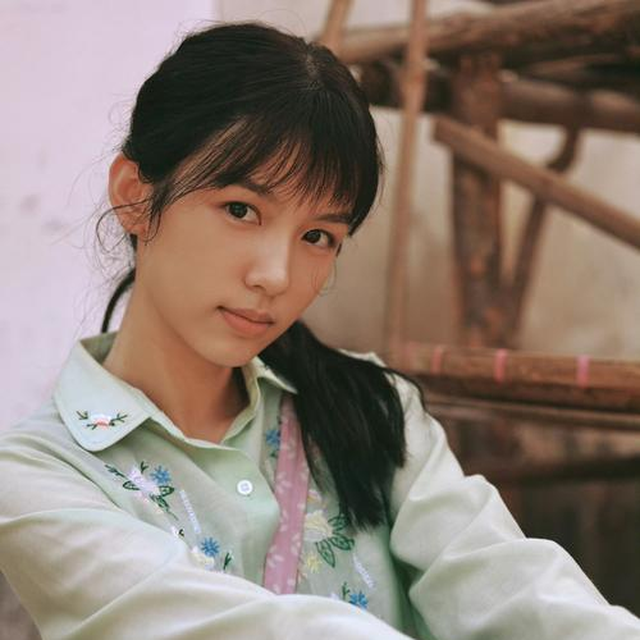
周也 夏晓兰 你好1983
Copy-Item assets/gifs/candidates/xiaxiaolan-01.png assets/gifs/xiaxiaolan.png -Force
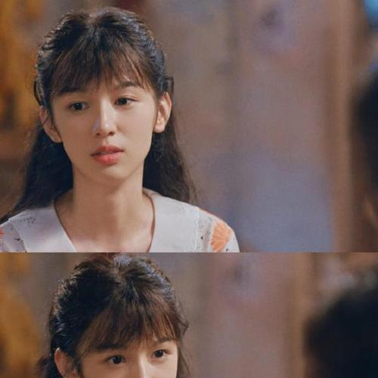
周也新剧你好1983今日开播，80年代夏晓兰造型获赞
Copy-Item assets/gifs/candidates/xiaxiaolan-02.png assets/gifs/xiaxiaolan.png -Force
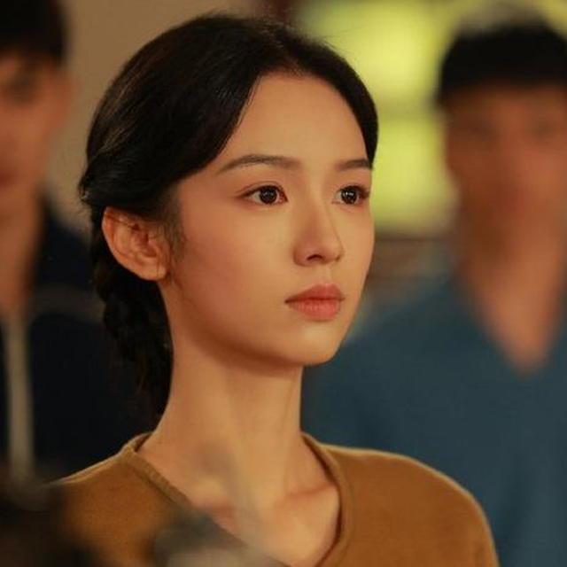
周也演绎夏晓兰：灵魂魅力大过外表
Copy-Item assets/gifs/candidates/xiaxiaolan-03.png assets/gifs/xiaxiaolan.png -Force
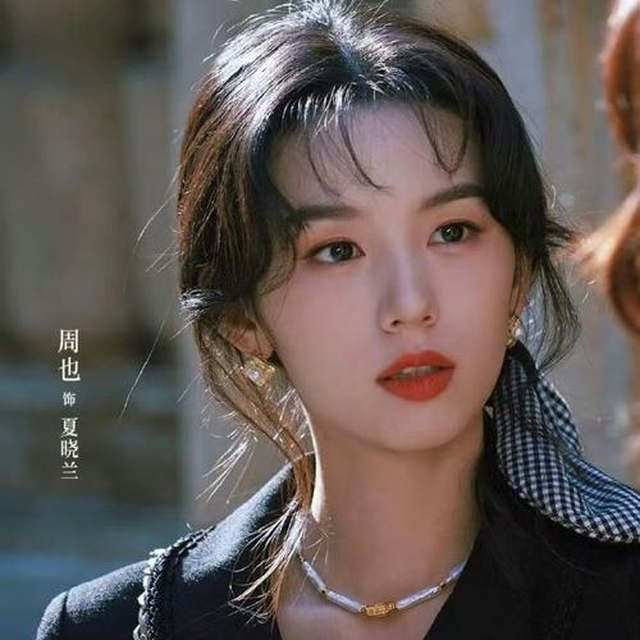
周也 你好1983 夏晓兰
Copy-Item assets/gifs/candidates/xiaxiaolan-04.png assets/gifs/xiaxiaolan.png -Force
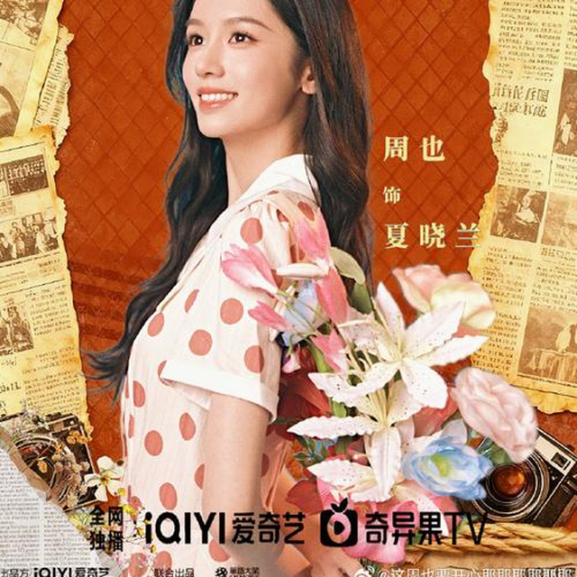
周也把夏晓兰演活了，傲娇宠人双在线
Copy-Item assets/gifs/candidates/xiaxiaolan-05.png assets/gifs/xiaxiaolan.png -Force
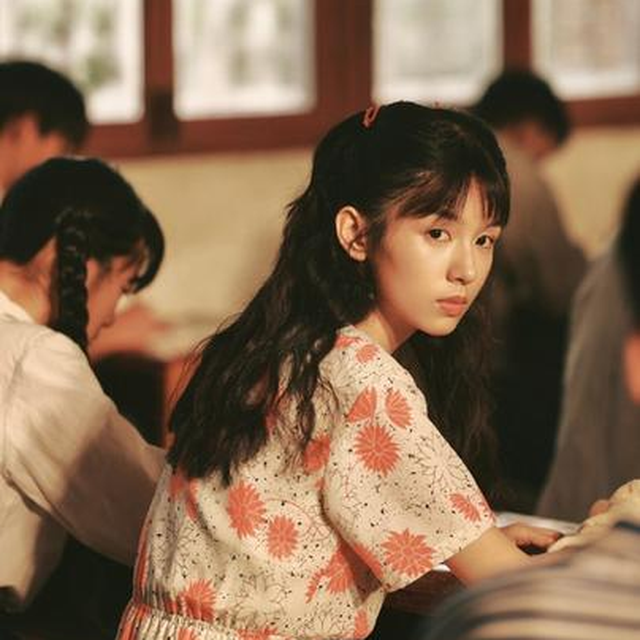
周也夏晓兰的可爱剧照来啦
Copy-Item assets/gifs/candidates/xiaxiaolan-06.png assets/gifs/xiaxiaolan.png -Force
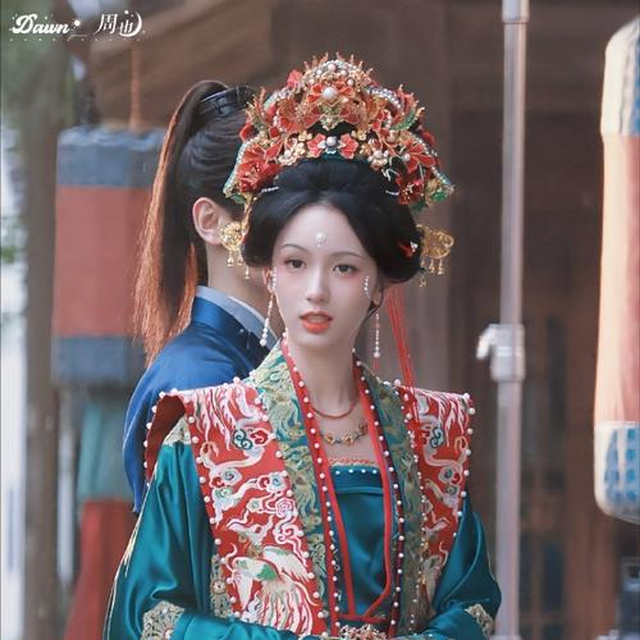
周也夏晓兰的可爱剧照来啦
Copy-Item assets/gifs/candidates/xiaxiaolan-07.png assets/gifs/xiaxiaolan.png -Force
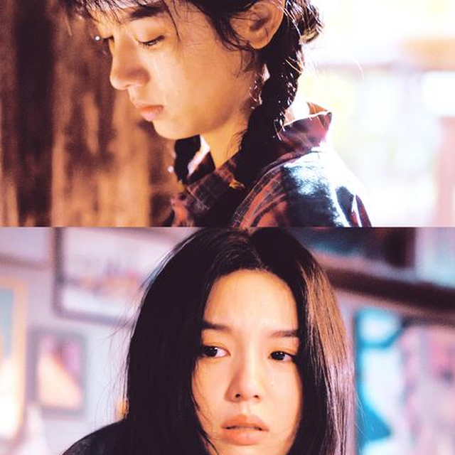
一集换了8套造型，完全就是从画报里走出来的
Copy-Item assets/gifs/candidates/xiaxiaolan-08.png assets/gifs/xiaxiaolan.png -Force
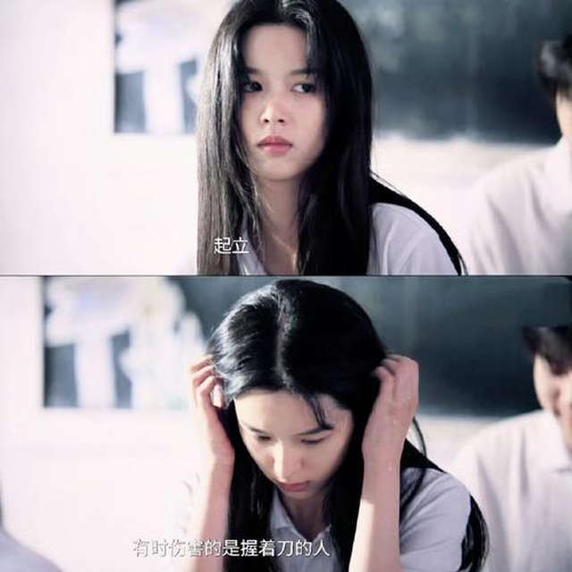
周也饰演的夏晓兰从现代的社畜穿越到1983年
Copy-Item assets/gifs/candidates/xiaxiaolan-09.png assets/gifs/xiaxiaolan.png -Force
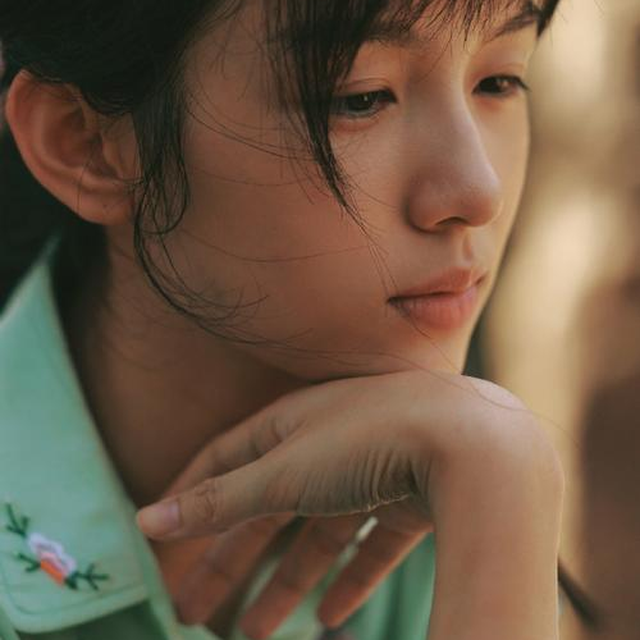
周也2026年3月17日主演《你好1983》饰演夏晓兰
Copy-Item assets/gifs/candidates/xiaxiaolan-10.png assets/gifs/xiaxiaolan.png -Force
当前使用：zhoucheng.png（当前装的是 zc04 那张）
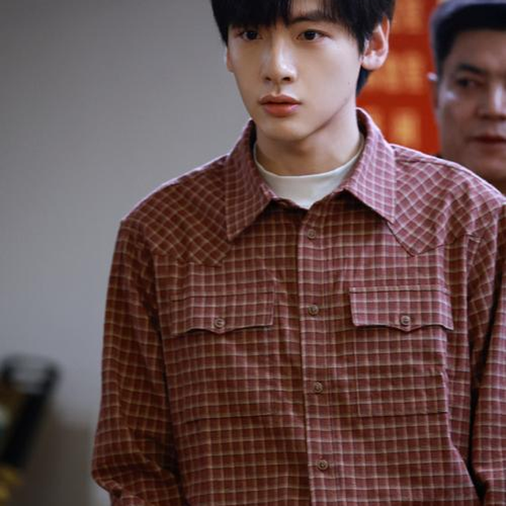
《你好1983》你的80年代白月光周诚来啦
Copy-Item assets/gifs/candidates/zhoucheng-01.png assets/gifs/zhoucheng.png -Force
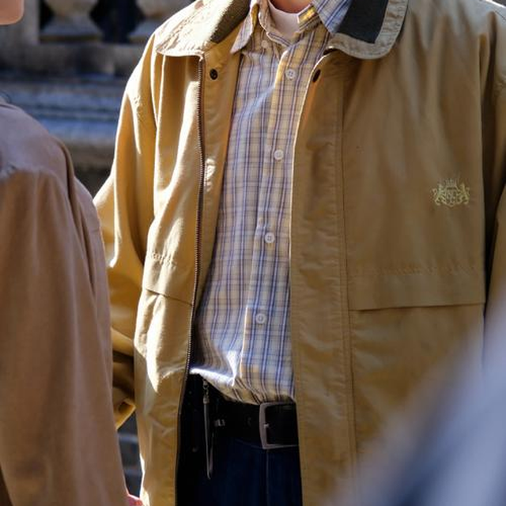
【翟潇闻】周诚：这个家我一定要加入！
Copy-Item assets/gifs/candidates/zhoucheng-02.png assets/gifs/zhoucheng.png -Force
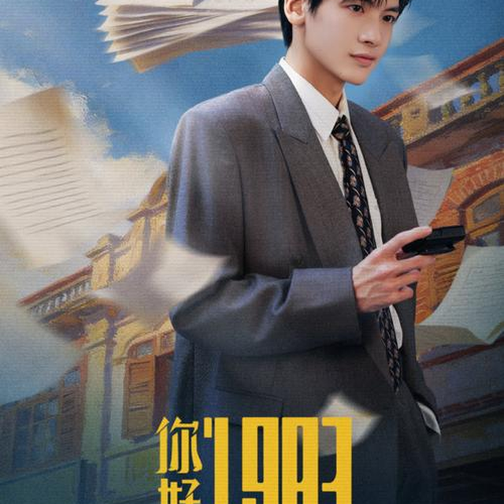
翟潇闻在剧里饰演出身于高干家庭的法律系高材生周诚
Copy-Item assets/gifs/candidates/zhoucheng-03.png assets/gifs/zhoucheng.png -Force
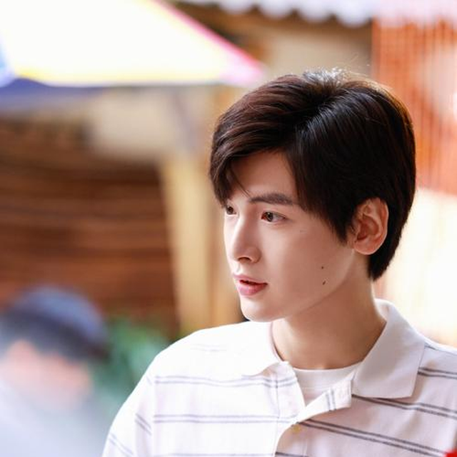
【翟潇闻】武力值max的周诚
Copy-Item assets/gifs/candidates/zhoucheng-04.png assets/gifs/zhoucheng.png -Force
周诚 理想型 #翟潇闻把周诚演活了！
Copy-Item assets/gifs/candidates/zhoucheng-05.png assets/gifs/zhoucheng.png -Force
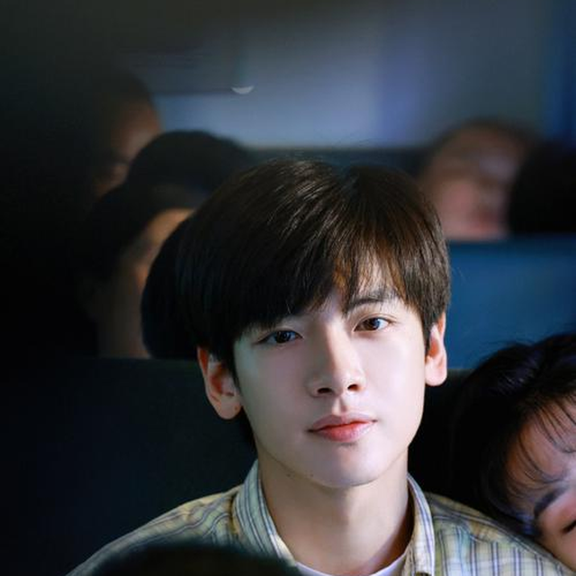
周诚 解语花 #看完《你好1983》，我宣布周诚就是我的理想男友
Copy-Item assets/gifs/candidates/zhoucheng-06.png assets/gifs/zhoucheng.png -Force
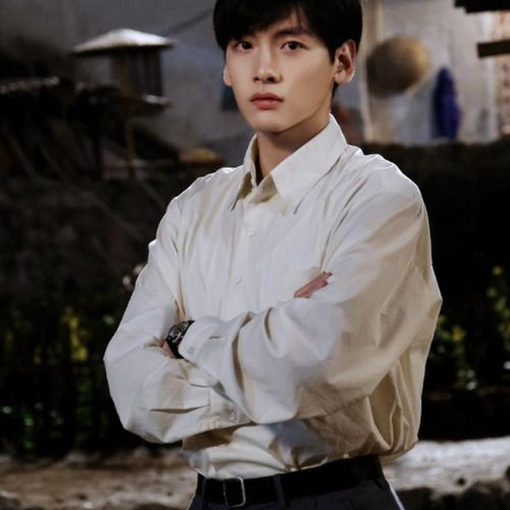
周诚的追梦人生正在加载中 #你好1983# 领衔主演：翟潇闻
Copy-Item assets/gifs/candidates/zhoucheng-07.png assets/gifs/zhoucheng.png -Force
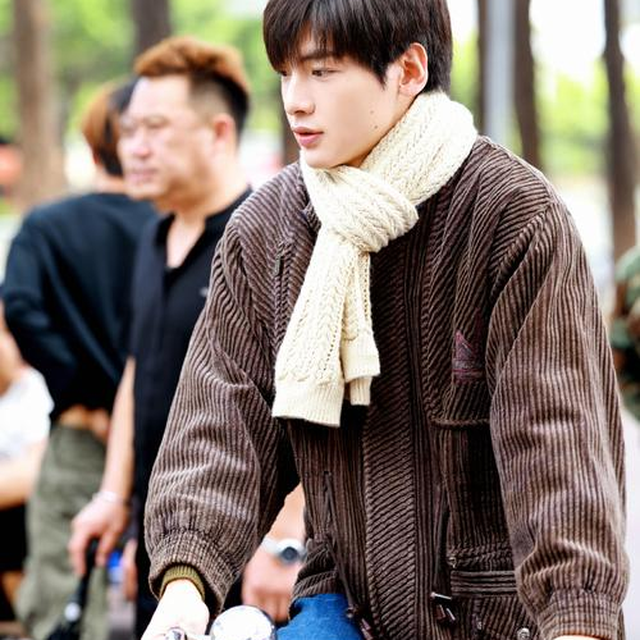
翟潇闻发文告别你好1983角色周诚
Copy-Item assets/gifs/candidates/zhoucheng-08.png assets/gifs/zhoucheng.png -Force
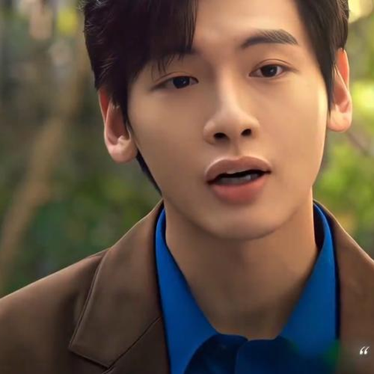
翟潇闻周诚
Copy-Item assets/gifs/candidates/zhoucheng-09.png assets/gifs/zhoucheng.png -Force
翟潇闻周诚 #翟潇闻你好1983
Copy-Item assets/gifs/candidates/zhoucheng-10.png assets/gifs/zhoucheng.png -Force